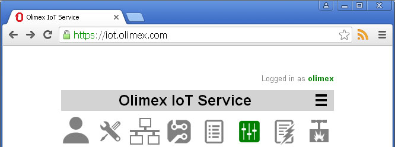
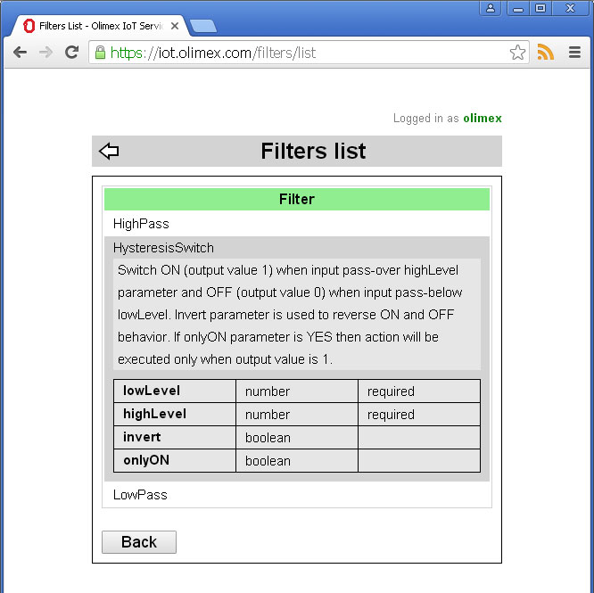

Back to OlimexIoT Help
Filters are plugin functions which are applied over values of property to reduce or enhance certain of property's characteristics.
To see implemented filters from main screen click on filters icon .
Click on filter name to see short description and list of parameters
### TODO ### How to write a filter
Back to OlimexIoT Help